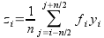

The commands which are available in this menu are not the same is a table or a plot is selected.
- Statistics on Columns
Creates a new table providing basic statistical information about the selected columns in the active table: average, variance, standard deviation, max value, etc...
You can select several columns in one table, one line will be created for each column. You can't select columns in different tables to obtain one single table of statistics.
- Statistics on Rows
Creates a new table providing basic statistical information about the selected rows in the active table: average, variance, standard deviation, max value, etc...
See the Statistics on Columns command command for more details.
- Sort Column
Sort the columns selected. If more than one column is selected, you can sort them:
separately: each column will be sorted in ascending or descending order
together: the column selected as leading column will be sorted in ascending or descending order, and the others column selected will be sorted in order to keep the rows unchanged.
- Sort Table
This is the same command as Sort Column but it operate on all columns of the active table.
- Normalize
Normalize the columns selected, that is modify the data in order to obtain a range of 0 to 1. All columns selected are normalized separately. This command doesn't create new normalized columns but replace the values of the selected columns.
- FFT...
Compute a direct or inverse Fast Fourier Transform. The parameters used can be set with the FFT dialog. See the fft section of the Analysis chapter for more details.
- Correlate
Do a croos-correlation of the two columns which are selected. See the correlate section of the Analysis chapter for more details.
- Convolute
Do a convolution of the two columns which are selected. The first one being the response and the second the signal. See the convolution section of the Analysis chapter for more details.
- Deconvolute
Do a deconvolution of the two columns which are selected. The first one being the response and the second the signal. See the deconvolution section of the Analysis chapter for more details.
- Non Linear Curve Fit... (Ctrl-Y)
Opens the Non-linear Fit dialog, allowing you to choose the curve to fit, the algorithm and the tolerance, the number of iterations to be performed, and to type the analytical function to use, the names of the fitting parameters and their initial guessed values. See the Non Linear Curve Fit section of the Analysis chapter for more details.


The following items are enabled only if the active window is a 2D Multilayer Plot Window. If the active plot layer contains more than one curve, and the Data Range Selectors are not enabled, a dialog window will pop-out allowing you to select the curve you want to analyse.
In most of the cases (except for integration), a new red curve is added to the active plot layer and a a new table containing the data used to plot this curve is added to the workspace. Useful information about the operation performed will be showed in the Results Log display.
The commands FFT... and Non Linear Curve Fit... are presented in the Table Analysis Menu.
- Analysis -> Differentiate
Creates a new plot displaying the resulting curve of the numerical differentiation. The computation of the derivative is done by centered finite diferences.
This command creates a new table which contain one column for X-values and one column for derivatives of Y-values. It creates also a new plot of the derivative.
- Analysis -> Integrate...
Opens the Integration dialog, allowing to choose the curve to integrate and the integration method.
This command can't be used to obtain a cumulative curve from a selected curve, it can only compute the integrate of the data between two limits. The result is given in the Log Panel.
- Analysis -> Smooth
.
- Savitski-Golay
This command perform a smoothing of the selected curve with the Savitzky-Golay method. The formula used to smooth the curve defined by the points yi=f(xi) is:
The fi values are computed by fitting the data points to a polynome, they depends on the number of points used for the smoothing of the curve and the order of the polynome. Compared to the moving window average method, the advantage of this smoothing method is that the values of extrema are not truncated. The dialog allows to specify the curve which will be smoothed, the value of the order of the polynome, the number of data points used for the polynomial fit before and after each point and the color used to draw the smoothed curved. A new table will be created to store the data points xi, zi.
- Moving Window Average...
This command perform a smoothing of the selected curve with the moving window average method. The formula used to smooth the curve defined by the points yi=f(xi) is:

The greater is n, the smoother the resulting curve zi=f(xi) is. The dialog allows to specify the curve which will be smoothed, the value of n and the color used to draw the smoothed curved. A new table will be created to store the data points xi, zi.
- Analysis -> FFT Filter
- Low Pass...
This command allows to filter the high frequencies of a signal. See the filtering section for more details. A dialog box will be opened in which you can select the curve to filter and the cut-off frequency of the filter.
This command creates a new table with the filtered datas, and a new curve will be added on the current plot.
- High Pass...
This command allows to filter the low frequencies of a signal. See the filtering section for more details. A dialog box will be opened in which you can select the curve to filter and the cut-off frequency of the filter.
This command creates a new table with the filtered datas, and a new curve will be added on the current plot.
- Band Pass...
This command allows to filter the low and high frequencies of a signal. See the filtering section for more details. A dialog box will be opened in which you can select the curve to filter and the cut-off frequency of the filter.
This command creates a new table with the filtered datas, and a new curve will be added on the current plot.
- Band Block...
This command allows to keep the low and high frequencies of a signal. See the filtering section for more details. A dialog box will be opened in which you can select the curve to filter and the cut-off frequency of the filter.
This command creates a new table with the filtered datas, and a new curve will be added on the current plot.
- Analysis -> Interpolate...
Performs an interpolation. The curve must have enough data points to compute the interpolated points, if not a warning message will be prompted out.
The methods available to perform the interpolation are Linear (the curve must contain at least 3 points), Cubic Spline (the curve you analyse must contain at least 4 points, if not a warning message will be prompted out, Non-rounded Akime spline (the curve you analyse must contain at least 5 points). See the Analysis chapter for a comparison of the differents methods.
This command creates a new curve on the current plot, and a new table.
- Analysis -> FFT...
Performs a forward or inverse FFT transform of the selected curve. The parameters used can be set with the FFT dialog.
The inverse FFT transform of a forward transform will result in a data set identical to that used for the forward transform.
- Analysis -> Fit Linear
Performs a linear fit of the selected curve. The results will be given in the Log panel
- Analysis -> Fit Polynomial...
Opens the Polynomial Fit dialog, allowing you to choose the curve to fit, the order of the polynomial function to use, the number of points of the resulting curve and the abscissae limits for the fit.
- Analysis -> Fit Exponential Decay
- First Order...
Opens the Exponential Fit dialog, allowing you to choose the curve to fit and the initial guesses for the fit parameters.
- Second Order...
Opens a dialog, allowing you to choose the curve to fit and the initial guesses for the fit parameters.
- Third Order...
Opens a dialog, allowing you to choose the curve to fit and the initial guesses for the fit parameters.
- Analysis -> Fit Exponential Growth...
Performs an exponential growth fit of the selected curve.
- Analysis -> Fit Lorentzian
Performs a lorentzian fit of the selected curve. It can be used to obtain a correlation equation of a bell shaped data set.
- Analysis -> Fit Gaussian
Performs a gaussian fit of the selected curve.It can be used to obtain a correlation equation of a bell shaped data set.
- Analysis -> Fit Bolzmann (sigmoidal)
Performs a fit to a bolzmann function of the selected curve. It can be used to obtain a correlation equation of a S shaped data set.
- Analysis -> Fit Multi-peak ->Gaussian...
Performs a fit to a sum of N gaussian function of the selected curve.
- Analysis -> Fit Multi-peak -> Lorentzian...
Performs a fit to a sum of N lorentz function of the selected curve.